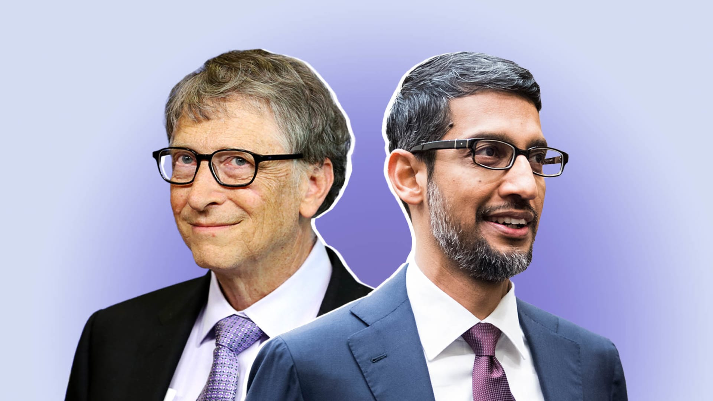

Sundar Pichai, in full Pichai Sundararajan, (born June 10, 1972, Madras [now Chennai], Tamil Nadu, India), Indian-born American executive who was CEO of both Google, Inc. (2015), and its holding company, Alphabet Inc. (2019).
As a boy growing up in Madras, Pichai slept with his brother in the living room of the cramped family home, but his father, an electrical engineer at the British multinational GEC, saw that the boys received a good education. At an early age Pichai displayed an interest in technology and an extraordinary memory, especially for telephone numbers. After earning a degree in metallurgy (B.Tech., 1993) and a silver medal at the Indian Institute of Technology Kharagpur, he was awarded a scholarship to study at Stanford University (M.S. in engineering and materials science, 1995). He remained in the United States thereafter, working briefly for Applied Materials (a supplier of semiconductor materials) and then earning an M.B.A. (2002) from the Wharton School of the University of Pennsylvania.
Following a short stint at the management consulting firm McKinsey & Co., Pichai joined Google in 2004 as the head of product management and development. He initially worked on the Google Toolbar, which enabled those using the Microsoft Internet Explorer and Mozilla Firefox Web browsers to easily access the Google search engine. Over the next few years, he was directly involved in the development of Google’s own browser, Chrome, which was released to the public in 2008. That same year Pichai was named vice president of product development, and he began to take a more-active public role. By 2012 he was a senior vice president, and two years later he was made product chief over both Google and the Android smartphone operating system.
In 2011 Pichai reportedly was aggressively pursued for employment by microblogging service Twitter, and in 2014 he was touted as a possible CEO for Microsoft, but in both instances he was granted large financial packages to remain with Google. He also was known to have helped negotiate Google’s $3.2 billion deal to acquire Nest Labs in 2014. Therefore, when Google cofounders Larry Page and Sergey Brin announced the creation of Alphabet Inc., in August 2015, it came as no surprise to industry insiders that Pichai was named CEO of Google, which was reorganized as a subsidiary. In December 2019 he also was named CEO of Alphabet, replacing Page, who stepped down.